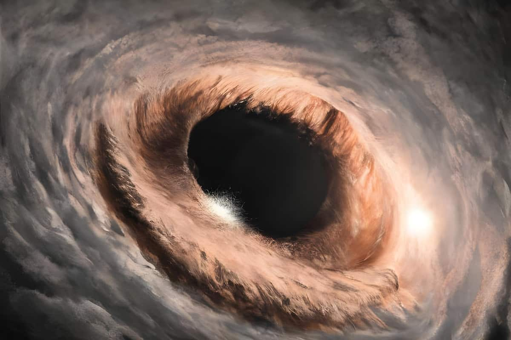

THE END
.jpg)
|
WHAT ARE BLACKHOLES?A black hole is a place in space where gravity pulls so much that even light can not get out. |
HOW ARE THEY FORMED?
Scientists think the smallest black holes formed when the universe began.
Stellar black holes are made when the center of a very big star falls in upon itself, or collapses.
When this happens, it causes a supernova.
A supernova is an exploding star that blasts part of the star into space.
Scientists think supermassive black holes were made at the same time as the galaxy they are in.
FUN FACTS ABOUT BLACK HOLES
DID YOU KNOW?

Black holes look like they're sucking in matter from all around, but that's a common misconception. Companion stars shed some of their mass in the form of stellar wind, and the material in that wind then falls into the grip of its hungry neighbour, a black hole. |
DID YOU KNOW?Einstein didn't discover the existence of black holes – though his theory of relativity does predict their formation. Instead, Karl Schwarzschild was the first to use Einstein's revolutionary equations and show that black holes could indeed form. |
DID YOU KNOW?Black holes can generate energy more efficiently than our Sun. The way this works has to do with the disk of material that orbits around a black hole. The material that is nearest to the fringe of the event horizon on the inner edge of the disk will orbit much more quickly than material at the very outer edge of the disk. |